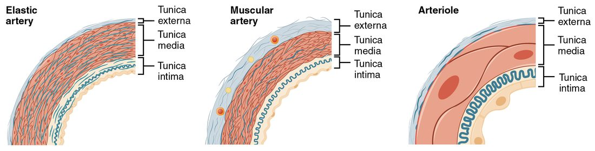
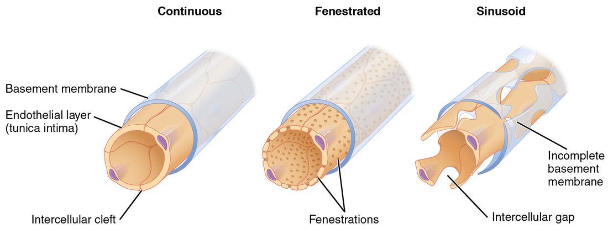
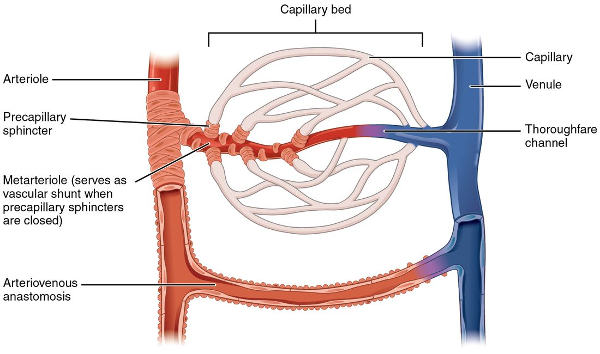
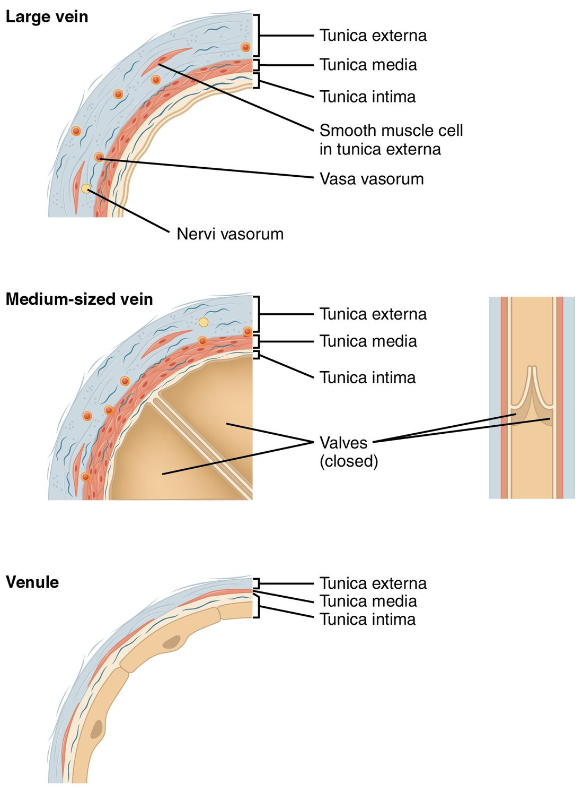
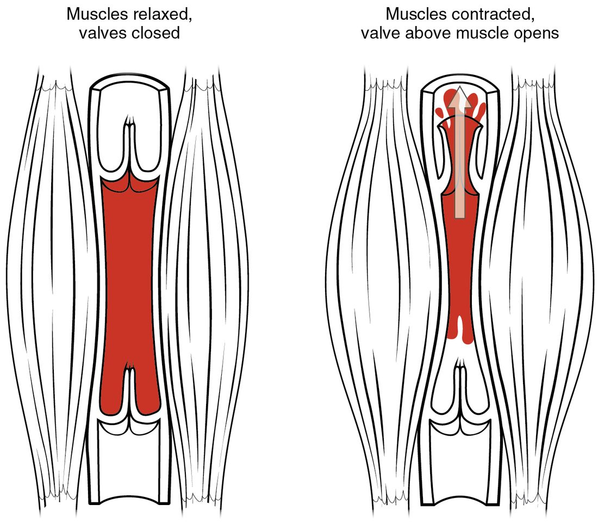

Arteries and veins look alike at a glance, but the structure differences between them explain almost everything they do. Every blood vessel except a capillary is built from the same three layers; what changes from vessel to vessel is how thick each layer is and what it is made of. This page works through the layers, then each kind of vessel in the order blood meets them: arteries, arterioles, capillaries, venules and veins. It ends with how blood gets back to your heart against gravity, and what happens when that fails.
Three layers in every wall
Slice across an artery and a vein that run side by side in your arm and look at them under a microscope (Figure 1). The artery is a thick-walled, round ring with a small opening. The vein beside it has a thinner wall, a wider opening, and often looks flattened or collapsed. Yet both walls have the same three layers, called tunics (tunica = coat), from the inside out.
- Tunica intima (intima = innermost). This is the lining. It is a single layer of simple squamous epithelium called the endothelium (endo- = within), sitting on a basement membrane, with a thin layer of connective tissue beneath. In arteries, a wavy sheet of elastic fibers, the internal elastic membrane, marks its outer edge. The endothelium gives blood a smooth surface to flow over, and its cells release chemical signals that act on the muscle beneath them.
- Tunica media (media = middle). This is the muscle layer: rings of smooth muscle, wrapped around the vessel, mixed with elastic fibers. When the smooth muscle contracts, the vessel narrows (vasoconstriction); when it relaxes, the vessel widens (vasodilation). In arteries, a second elastic sheet, the external elastic membrane, marks its outer edge.
- Tunica externa (externa = outer), also called the tunica adventitia. This is a sleeve of connective tissue, mostly collagen fibers, that anchors the vessel to nearby tissues and stops it from overstretching. This course uses the name tunica externa.
A thick wall cannot be fed by the blood flowing through it: nutrients and oxygen diffuse only a short distance from the lumen. So the walls of large vessels have their own tiny vessels, the vasa vasorum (Latin, "vessels of the vessels"), which run in the tunica externa and supply its outer layers. They also carry nerves, the nervi vasorum ("nerves of the vessels"), which are sympathetic fibers that reach the smooth muscle of the tunica media and control how contracted it is.
Elastic arteries and muscular arteries
Arteries carry blood away from your heart at high pressure. Pressure in the large arteries swings between about 120 and 80 mm Hg with every beat. Two kinds of artery handle that pressure in different ways (Figure 2).
Elastic arteries
Elastic arteries are the largest arteries, nearest the heart: the aorta, the pulmonary trunk and their biggest branches. Their tunica media holds dozens of layers of elastic fibers between the smooth muscle cells, so the wall behaves like a thick rubber tube.
Here is what that elastin does with each beat.
- During ventricular ejection, blood enters the aorta faster than it can flow on into smaller arteries. The extra blood stretches the elastic wall.
- The stretched elastic fibers store some of the energy of the heartbeat, the way a stretched rubber band does.
- When the aortic valve closes, the fibers recoil. They squeeze the blood onward during diastole.
- So pressure in the aorta falls only to about 80 mm Hg between beats instead of to zero, and blood keeps flowing to your tissues between beats as well as during them.
With age, elastic fibers in these walls are gradually replaced by stiffer collagen. A stiffer aorta stretches less, so pressure rises higher during each ejection and falls lower between beats.
Muscular arteries
Farther from the heart, arteries become muscular arteries. Their tunica media is mostly smooth muscle, often many layers thick, with far fewer elastic fibers. These are the named arteries that carry blood to individual organs and regions, from about 1 cm across down to about 0.1 mm. Their thick smooth muscle lets sympathetic nerves narrow or widen them, which changes how much blood goes to each region.

Arterioles: the resistance vessels
Muscular arteries branch into arterioles (-ole = small), the smallest arteries: under about 0.1 mm across, with a tunica media of only one to a few layers of smooth muscle. They are small, but they matter more than any other vessel for where your blood goes.
You learned that resistance to flow depends on 1 ÷ radius to the fourth power. A small change in an arteriole's radius therefore makes a large change in its resistance. Halve the radius, and resistance rises 16-fold. And arterioles are where the smooth muscle is thickest relative to the size of the vessel. That combination makes them the body's main resistance vessels: the largest single drop in blood pressure along the path from the heart happens as blood passes through them.
Arteriolar smooth muscle is never fully relaxed. Steady sympathetic signals and local chemicals keep it partly contracted all the time. That baseline partial contraction is vascular tone. Because tone sits in the middle of the range, it can move either way.
- More sympathetic activity: norepinephrine binds alpha adrenergic receptor proteins on the smooth muscle, the muscle contracts further, the arterioles narrow, and less blood flows into the tissue beyond them.
- Less sympathetic activity, or local chemicals released by active tissue: the muscle relaxes, the arterioles widen, and more blood flows through.
So arterioles are the valves that decide how much blood each capillary bed receives. Exercising muscle gets more, resting gut gets less, all by adjusting arteriolar radius.
Capillaries: where exchange happens
Capillaries are where blood and tissue exchange gases, nutrients and wastes. Three features of their structure make that exchange fast.
- Their wall is only the tunica intima: one layer of endothelial cells and its basement membrane. There is no muscle and no outer coat, so the distance for diffusion is tiny.
- They are narrow, about 5 to 10 micrometers across, so red blood cells pass through in single file and every cell sits close to the wall.
- They are everywhere. Almost no cell in your body lies more than a few cells away from one.
Scattered along the outside of capillaries and small venules are pericytes (peri- = around, -cyte = cell): cells with long arms wrapped around the endothelium. They support the wall, help control how leaky it is, and can contract to adjust capillary width in some tissues, such as the brain.
Three types of capillary
Capillaries differ in how leaky their walls are, and the type in each tissue sets what can cross there (Figure 3).
- Continuous capillaries are the most common. Their endothelial cells form an unbroken sheet on a complete basement membrane. Narrow gaps between the cells, called intercellular clefts, let water and small solutes such as glucose and ions through; large proteins and blood cells stay inside. You find them in skin, muscle, connective tissue and the lungs. In the brain, tight junctions seal even the intercellular clefts, which is the basis of the blood–brain barrier.
- Fenestrated capillaries (fenestra = window) have small pores through the endothelial cells themselves, on an intact basement membrane. The pores let fluid and small molecules through much faster. You find them where large amounts of fluid are filtered or absorbed: the kidneys, the lining of the intestines, the choroid plexus of the brain, and endocrine glands that release hormones into the blood.
- Sinusoids, or sinusoidal capillaries (sinus = hollow), are wide, twisting capillaries with large gaps between endothelial cells and an incomplete basement membrane. Proteins, and even whole blood cells, can pass through. You find them in the liver, spleen and red bone marrow, where new blood cells enter the blood and old ones are removed, and where large proteins made by the liver enter it.

Capillary beds and how flow into them is controlled
Capillaries do not occur singly. An arteriole feeds a network of 10 to 100 of them, the capillary bed, which drains into a venule (Figure 4). The flow through arterioles, capillaries and venules together is called the microcirculation (micro- = small).
Some beds have a direct route through them. A metarteriole (meta- = beyond) is a short vessel leaving the arteriole, with scattered smooth muscle cells; it continues as a thoroughfare channel that runs straight to the venule. Capillaries branch off this route. In a few places, such as the skin of your fingers, toes and ears, an arteriovenous anastomosis connects an arteriole directly to a venule and skips the capillary bed entirely. Any route that lets blood bypass the capillaries is called a vascular shunt. In the skin, these shunts open in warm conditions and close in the cold.
What decides how much blood enters a capillary bed? The evidence points to the arterioles. Their smooth muscle sets the resistance at the entrance to each bed, and it responds both to sympathetic nerves and to chemicals released by nearby tissue. Blood flow through a bed is not steady: the smooth muscle of arterioles and metarterioles contracts and relaxes rhythmically several times a minute, so flow through individual capillaries comes in pulses. That rhythmic contraction is called vasomotion.
Older textbooks describe a ring of smooth muscle, a precapillary sphincter (sphincter = band that closes), at the entrance of every capillary, opening and closing it. Discrete sphincters like that have been seen in a few tissues and species, for example in the brains of mice. But anatomical evidence for them in most human tissues is thin, so their role in people is unsettled. The drawing in Figure 4 shows them in the classic way.

Venules and veins
Capillaries drain into venules (-ule = small), the smallest veins. The first, postcapillary venules, are little more than endothelium with pericytes around it, and they are leaky enough that white blood cells squeeze out of the blood through their walls. Larger venules gain a thin layer of smooth muscle. Venules merge into veins, which carry blood back to the heart (Figure 5).
By the time blood reaches the veins, most of the pressure the heart gave it has been used up pushing it through the arterioles and capillaries. Pressure in venules is about 15 mm Hg or a little less, and it falls to near 0 in the right atrium. Vein walls reflect that low pressure.
- Their tunica media is thin, with little smooth muscle and few elastic fibers.
- Their thickest layer is the tunica externa, mostly collagen.
- Their lumen is wide, and with little blood in it the thin wall often collapses into an oval.
- Many veins, especially in the limbs, have venous valves: paired flaps formed by folds of the tunica intima, like tiny semilunar valves. They let blood flow toward the heart and close when blood starts to flow backward.

Arteries, capillaries and veins compared
| Feature | Arteries | Capillaries | Veins |
|---|---|---|---|
| Direction of flow | Away from the heart | Between arterioles and venules | Toward the heart |
| Blood pressure | High: about 120 to 80 mm Hg in large arteries | Moderate: about 35 falling to 15 mm Hg | Low: about 15 mm Hg in venules, falling to near 0 |
| Tunica intima | Endothelium; internal elastic membrane present | Endothelium and basement membrane: the whole wall | Endothelium; folds into valves in many veins |
| Tunica media | Thick; smooth muscle and elastic fibers | Absent | Thin; little smooth muscle |
| Tunica externa | Thinner than the media | Absent | Thickest layer; mostly collagen |
| Lumen | Small and round for the wall thickness | About 5 to 10 micrometers; red blood cells in single file | Large; often collapsed into an oval |
| Valves | None, except the aortic and pulmonary valves at the heart | None | Present in many, especially in the limbs |
| Main job | Carry blood under pressure; arterioles set resistance and flow | Exchange with tissues | Return blood to the heart; hold a reserve of blood |
| Share of blood volume at rest | About 13 to 15 percent (systemic arteries) | About 5 to 7 percent (systemic capillaries) | About 60 to 65 percent (systemic veins and venules) |
Veins as a blood reservoir
Look at the last row of the table. At rest, well over half of your blood is in your veins and venules, not in your heart or arteries. Veins are capacitance vessels: vessels that can hold large, changing volumes of blood.
They can do that because they are highly compliant (compliance = how much a vessel's volume changes for a given change in pressure). A thin wall with little muscle stretches easily, so adding blood to a vein raises its pressure only slightly. An artery's thick wall resists stretch, so the same added volume would raise its pressure far more.
The blood held in the veins is the venous reservoir, sometimes called the venous reserve, and your body can draw on it. Sympathetic nerves also reach the smooth muscle of veins. When they fire, the veins constrict slightly. Their capacity shrinks, and blood that was sitting in them is pushed toward the heart. After a moderate blood loss, this shift from the venous reservoir is one of the first responses that keeps blood flowing to vital organs. Large pools of blood in the veins of the skin, liver and spleen are especially easy to shift.
Venous return: getting blood back to the heart
Venous return is the flow of blood back to the heart through the veins. Like all flow, it needs a pressure gradient. But the gradient is small: about 15 mm Hg in the venules, near 0 in the right atrium. And when you stand, the blood in your leg veins must rise more than a meter against gravity. Three mechanisms help.
The skeletal muscle pump
Many veins in your limbs run between skeletal muscles (Figure 6). Follow one contraction of your calf.
- The muscle contracts and bulges, squeezing the veins that run through it.
- The squeeze raises the pressure of the blood inside those veins.
- The higher pressure pushes the valve above the squeezed segment open and the valve below it shut.
- Blood can only move one way: up, toward the heart.
- When the muscle relaxes, pressure in that segment falls. The valve above closes, so blood above cannot fall back, and blood from below flows in to refill the segment.
This is the skeletal muscle pump. Walking works it with every step. Standing still does not, which is why soldiers standing at attention for a long time sometimes faint: blood pools in their legs, less returns to the heart, and less reaches the brain.

The respiratory pump
Breathing moves blood too, through the respiratory pump. The large veins that carry blood from your abdomen to your heart pass through the thoracic cavity on the way.
Each breath in therefore lowers the pressure around the veins in your chest and raises it around the veins in your abdomen. That widens the pressure gradient from abdomen to chest, so blood flows toward the heart faster. Venous valves in the limbs keep it from being pushed back the other way. Breathing out reverses the pressures, and flow slows. Deeper breathing, as in exercise, makes the pump stronger.
Venoconstriction
The third mechanism is the one you met in the last section. Sympathetic signals constrict the smooth muscle of the veins, which shrinks the venous reservoir and raises venous pressure. That steepens the gradient back to the heart and moves more blood toward it.
Varicose veins
Venous valves can fail. When a valve's cusps no longer meet, it becomes incompetent: blood leaks back down through it whenever you stand. The blood pools in the segment below, raising the pressure there. The thin wall stretches, and the stretch pulls the next valve's cusps farther apart, so it fails too. Over time, the veins become swollen, lengthened and twisted. These are varicose veins (varix = dilated vein).
They are most common in the superficial veins of the legs, which are not supported by surrounding muscle. Risk rises with age, with long hours standing, with pregnancy (the enlarged uterus compresses the large veins in the pelvis), with obesity, and in families where it runs. Treatment starts with elevating the legs, walking to work the muscle pump, and compression stockings, which squeeze the veins from outside so their valves can meet again.
Putting it together
Every vessel wall except a capillary's has three tunics: the intima (endothelium), the media (smooth muscle and elastic fibers) and the externa (collagen), and large vessels are fed by vasa vasorum. Elastic arteries stretch and recoil to keep pressure up between beats; muscular arteries distribute blood to organs; arterioles, the resistance vessels, set flow into each capillary bed through their vascular tone. Capillaries are a single endothelial layer, of three types (continuous, fenestrated and sinusoidal) that differ in how leaky their walls are. Veins have thin walls, wide lumens and valves; they hold most of your blood as a reservoir, and venous return depends on the skeletal muscle pump, the respiratory pump and venoconstriction. When venous valves fail, veins stretch into varicose veins.